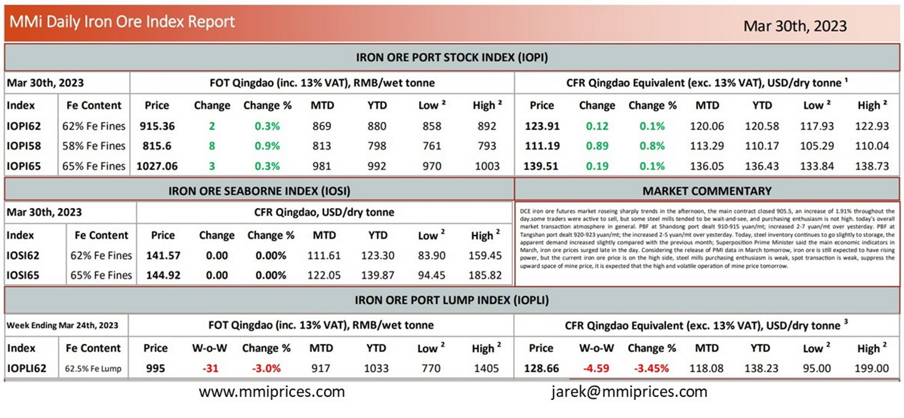

DCE iron ore futures market roseing sharply trends in the afternoon, the main contract closed 905.5, an increase of1.91% throughout the day.some traders were active to sell, but some steel mills tended to be wait-and-see, and purchasing enthusiasm is not high. today’s overall market transaction atmosphere in general. PBF at Shandong port dealt 910-915 yuan/mt; increased 2-7 yuan/mt over yesterday. PBF at Tangshan port dealt 920-923 yuan/mt; the increased 2-5 yuan/mt over yesterday. Today, steel inventory continues to go slightly to storage, the apparent demand increased slightly compared with the previous month; Superposition Prime Minister said the main economic indicators in March, iron ore prices surged late in the day. Considering the release of PMI data in March tomorrow, iron ore is still expected to have rising power, but the current iron ore price is on the high side, steel mills purchasing enthusiasm is weak, spot transaction is weak, suppress the upward space of mine price, it is expected that the high and volatile operation of mine price tomorrow.

Download PDFSource: Metals Market Index (MMi)